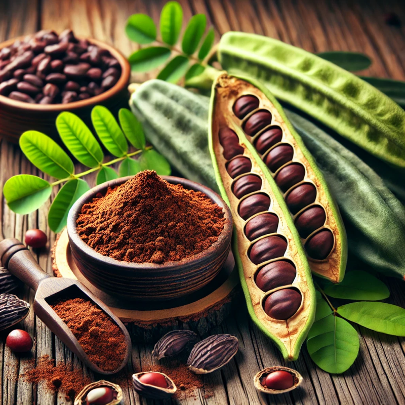

Keçiboynuzunun Faydaları
Keçiboynuzu, binlerce yıldır sağlık açısından faydalarıyla bilinen ve doğallığı ile öne çıkan bir besindir. İçeriğinde bol miktarda lif, antioksidan, vitamin ve doğal şekerler barındırır. UPEK GIDA, keçiboynuzunun doğallığını ve besin değerini koruyarak sağlıklı yaşamı destekleyen ürünler sunmaktadır.
1. Keçiboynuzunun Besin Değeri Keçiboynuzu, sağlığa yararlı birçok bileşen içerir: • Lif Zenginliği: Yüksek lif içeriği sayesinde sindirim sistemini destekler, kabızlığı önler ve bağırsak sağlığını iyileştirir. • Doğal Şekerler: Keçiboynuzu, rafine şeker içermeyen doğal şeker kaynaklarıyla enerji verir. Bu özelliğiyle şeker alternatifi olarak tercih edilir. • Vitamin ve Mineraller: A, B, E vitaminleri ile kalsiyum, potasyum, magnezyum ve çinko gibi mineraller açısından zengin bir besindir. • Antioksidanlar: Serbest radikallere karşı koruma sağlayarak bağışıklık sistemini güçlendirir ve hücresel hasarı azaltır.
2. Keçiboynuzunun Sağlık Üzerindeki Faydaları • Bağışıklık Sistemini Güçlendirir: Antioksidan içeriği sayesinde bağışıklık sistemini destekler ve vücudu hastalıklara karşı korur. • Sindirim Sistemi Sağlığı: Yüksek lif oranı, sindirim sistemi için oldukça faydalıdır. Mide ve bağırsak hareketlerini düzenler, kabızlığı önler. • Enerji Verir: Doğal şeker içeriği ile hızlı bir enerji kaynağıdır. Sporcular ve yoğun tempoda çalışanlar için doğal bir enerji deposudur. • Kemik Sağlığına Destek: Keçiboynuzu, kalsiyum bakımından zengin olduğu için kemik ve diş sağlığını destekler, osteoporoz riskini azaltır. • Kolesterolü Düşürür: Keçiboynuzunda bulunan çözünebilir lifler, kötü kolesterol seviyesini düşürmeye yardımcı olur. • Solunum Yolu Problemlerini Hafifletir: Özellikle keçiboynuzu özü, öksürük, bronşit ve astım gibi solunum yolu rahatsızlıklarının hafifletilmesine destek olur.
3. Keçiboynuzu Ürünleri ve Kullanım Alanları Keçiboynuzu, birçok farklı formda tüketilebilir: • Keçiboynuzu Özü (Pekmezi): Doğal tatlandırıcı olarak kahvaltılarda veya tatlılarda kullanılır. Bağışıklık sistemini güçlendirir ve enerji verir. • Keçiboynuzu Unu: Glütensiz yapısı sayesinde un alternatifi olarak kullanılır. Özellikle kek, kurabiye ve ekmek yapımında tercih edilir. • Keçiboynuzu Çayı: Sakinleştirici özelliği sayesinde stresi azaltır, sindirimi düzenler ve solunum yolu rahatsızlıklarını hafifletir. • Atıştırmalıklar: Doğal, katkısız atıştırmalıklar ve enerji barları için mükemmel bir malzemedir.
4. UPEK GIDA Kalitesiyle Keçiboynuzu Ürünleri UPEK GIDA, keçiboynuzunun doğallığını ve besin değerini koruyarak üretim yapmaktadır. • Doğal ve Katkısız Üretim: Keçiboynuzu ürünlerimiz, herhangi bir katkı maddesi kullanılmadan, doğal yöntemlerle üretilir. • Yüksek Kalite Standartları: Ürünlerimiz, uluslararası hijyen ve kalite standartlarına uygun şekilde işlenir ve ambalajlanır. • Sağlıklı ve Lezzetli: Tüketicilerimize hem sağlık hem de lezzet sunan ürünlerimiz, her yaş grubuna hitap eder.
Sonuç: Doğal ve Sağlıklı Bir Tercih Keçiboynuzu, doğanın sunduğu mucizevi bir besindir. Sindirim sistemi sağlığını iyileştirir, enerji verir, bağışıklığı güçlendirir ve kemik sağlığını destekler. UPEK GIDA kalitesiyle üretilen keçiboynuzu ürünleriyle doğallığı keşfedin ve sağlıklı yaşamın keyfini çıkarın! Sağlığınız için doğal seçim: UPEK GIDA keçiboynuzu ürünleri ile sağlıklı yaşama bir adım daha yaklaşın!
Keçiboynuzunun Sağlığa Faydaları
- Sindirimi kolaylaştırır ve mide rahatsızlıklarını giderir.
- Bağışıklık sistemini güçlendirir.
- Enerji verir ve yorgunlukla savaşır.
- Bronşit ve astım gibi solunum yolu hastalıklarında rahatlama sağlar.
- Doğal bir tatlandırıcı olarak şeker tüketimini azaltır.
Keçiboynuzunun sağlık üzerindeki olumlu etkileri bilimsel olarak da kanıtlanmıştır. UPEK GIDA olarak, keçiboynuzundan üretilen doğal ürünlerimizle sağlıklı bir yaşamı destekliyoruz.